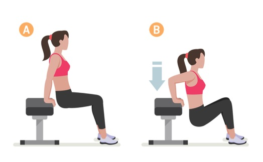

1
2
3
4
5
6
Ho ho ho!
1:a december och du har öppnat första luckan.För att du ska kunna äta så mycket som möjligt under julen måste du träna!
Varje dag fram till jul kommer du att få ett uppdrag av tomten som du MÅSTE utföra.
God jul och lycka till önskar tomten!
Dagens uppdrag: Gör totalt 40 situps under dagen.
Alla varianter av situps är tillåtna, för lite inspiration se videon nedan.
2:a december är kommen!
Jag hoppas att gårdagens uppdrag gick bra,kanske börjar du redan nu känna av lite magmuskler *blink *blink ;)
Dagens uppdrag: 20 armhävningar!
Såklart får man göra valfri variant även idag.
Några förslag på varianter är: Vanliga armhävningar,
armhävning på knä och armhävning med handsläpp
Lycka till och GOOO JUL önskar tomten.
3:e december är här!
Idag vill tomten att du går en extra promenad,du ska gå ungefär 3000 extra steg mot vad du brukar gå på en dag.
Lycka till och kom ihåg att om du inte gör alla uppdrag så blir det inga julklappar!
4:e december!
Efter gårdagens promenad är det äntligen dags för burpees!Wohoo nu är vi igång med träningen !!
Dagens uppdrag: Gör 20 ordentliga burpees!
Idag har tomten skickat ut sina spion-nissar för att se till att alla uppdrag blir gjorda!
Så passa er, bäst att ni gör alla 20 burpees ;)
Om ni inte vet hur en burpee ser ut så kolla videon nedan.
Äntligen är det 5:e december!
Tomten hoppas att alla övningar har gått bra hittills,kanske har du fått lite träningsvärk?
Snart kan vi börja smälla i oss massor av julmat men vi måste träna lite till först.
Idag får man välja mellan 2 olika uppdrag,
Tomten vill att du antingen gör 30 knäböj eller 30 jumping jacks.
Valet är ditt, lycka till!
6:e december!
Snart har ni tränat i en hel vecka, bra jobbat!Dagens uppdrag kräver att man använder sig utav en vikt och därför har tomten tagit hjälp av Linda. Hon kommer att skicka en tillhörande video där hon visar saker man har i hemmet som man kan använda som en vikt. Vattenflaskor fyllda med vatten kanske? Undra vad hon har hittat på.
Dagens uppdrag: 20st rodd med valfri vikt.
Kom ihåg att rodd är en övning för ryggen, tänk på att trycka ihop skulderbladen i toppläget.
Se video nedan alternativt video från Linda för mer info.
Lycka till!
7
8
9
10
11
12
7:e december är här!
När du gjort denna övning har du tränat en hel vecka, mycket bra jobbat! Detta firar vi med att du idag får välja övning helt själv.Dagens uppdrag:
Gör 20-30st av VALFRI övning.
Glöm inte att rapportera in vad du gjort.
Lycka till!
8:e december!
Träningsvärken i magen börjar avta..Favorit i repis - 20 situps LETS GO!
9:e december!
"Nu tindrar stjärnor i det blåi hus och fönster likaså
och alla röda tomtar gå
med vita skägg och luvor på."
Dagens uppdrag: Minst 10 utfallssteg på varje ben (20 totalt).
Pluspoäng till den som vågar göra med vikt. Lycka till!
10:e december är här!
Idag är ingen vanlig dag utan det är vår älskade Sandras födelsedag!Hipp hipp hurra från tomten, GRATTIS!
Eftersom att Sandra fyller år idag har hon fått välja dagens uppdrag.
Dagens uppdrag: upphopp till failure!
Alltså, gör så många upphopp du kan efter varandra tills du inte klarar fler.
Försök verkligen att fortsätta ända tills benen brinner!
Lycka till!
AND THE WINNER IS.. DAVID!
Träningsvärk i benen?
Tomten hoppas det. *blink *blink
Idag låter vi benen vila och passar på att träna ryggen.
Dagens:
20-30 valfri variant av rygglyft.
Träningsvärk i benen?
Tomten hoppas det. *blink *blink
Idag låter vi benen vila och passar på att träna ryggen.
Dagens:
20-30 valfri variant av rygglyft.
Tomten hörde från en nisse att någon tyckte övningarna var för lätta.
Hmm.. Får se vad vi gör åt det..
Idag vill tomten att ni gör armhävningar igen!
Denna gång är det 30st!
Och dessutom, om man väljer att göra på knä eller med handsläpp måste man göra dubbelt på många! alltså 60 st mouhaha
OBS! kom ihåg att ni inte behöver göra alla på samma gång.
Enjoy! och God Jul.
Hmm.. Får se vad vi gör åt det..
Idag vill tomten att ni gör armhävningar igen!
Denna gång är det 30st!
Och dessutom, om man väljer att göra på knä eller med handsläpp måste man göra dubbelt på många! alltså 60 st mouhaha
OBS! kom ihåg att ni inte behöver göra alla på samma gång.
Enjoy! och God Jul.
13
14
15
16
17
18
13:e december och Lucia!
"Ge oss musik, fiolen stämoch sjung om julen och Betlehem!
Låt Staffan vattna fålar fem
och god havre fodra dem."
Idag är en speciell dag!
Dagens uppdrag är att ni alla ska gå en gemensam promenad på minst 3000 steg, det är viktigt att ni går tillsammans.
Ni kan se det som ett litet luciatåg.
Trevlig Lucia allihop!
14:e december!
Efter gårdagens vila är det dags att komma igång igen.Dagens uppdrag:
30 st Mountain Climbers!
I videon nedan visas 2 olika varianter,
gör den som passar dig bäst.
Hur känns det i magen?
Börjar magrutorna synas snart eller?
15:e december!
Mina kära vänner, visst är det kul med jägarvila? Som ni kanske förstår är det dagens uppdrag!Stå så länge du kan!
DET SKA BRINNA I BENEN!
Glöm inte att rapportera in ditt resultat! Och denna gång gärna med video ;)
90 graders vinkel är det som gäller.
16:e december!
Världens bästa på jägarställning tydligen!Idag ska vi ta hand om våra kära ryggar!
Dagens uppdrag:
40 st Bird-dog (20 på varje sida)
Använd gärna en vikt i handen om du vill!
17:e december!
"Låt friden komma till envarsen Kalle Anka tystnat har
sen klapputdelningen är klar
och bara sömnigheten är kvar."
Nu börjar vi närma oss jul!
Idag ska vi röra på kroppen ordentligt.
Dagens uppdrag är jumping jacks.
Gör ett valfritt antal eller en valfri tid.
Exempelvis 1-2 min eller 50-100 st?
Lycka till!
18:e december och äntligen fredag!
Innan ni börjar med fredagsvinet kan det vara bra med lite träning.Idag ska ni göra dips! Man kan göra mot en stol/soffa/bänk eller liknande och man kan ha hela fotten i golvet eller bara hälen.
Ni väljer själva hur tungt det ska vara!
Gör minst 30 stycken! Gärna fler.. ;)
Kom ihåg att man inte behöver göra alla samtidigt.

Kan man inte göra dips går det bra att göra en annan armövning.
19
20
21
22
23
24
19:e december och "julafton"!
Idag är en speciell dag, vår alldeles egna julafton!Innan vi smäller i oss massa god mat och nubbe ska vi köra en rejäl brännare för magen!
Vi börjar närma oss jul och slutet på kalendern vilket betyder att vi måste börja ta i ordentligt! Idag ska ni göra MINST 50 st situps!
Inge fusk nu! Koooom igen du vill väl inte se ut som tomten..
20:e december!
test 21
test 22
test 23
test 24